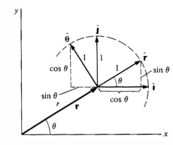
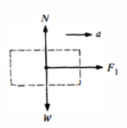
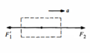
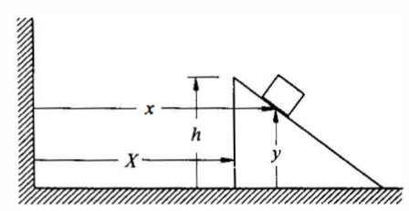
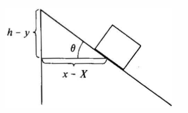
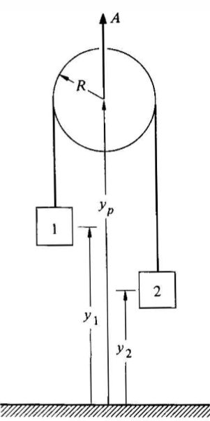
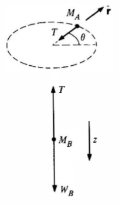

$$ \text{Cartesian position}(x,y) = x\begin{pmatrix} 1 \\ 0 \end{pmatrix} + y\begin{pmatrix} 0 \\ 1 \end{pmatrix} $$
$$\text{Polar Position}(r,\theta)= r\begin{pmatrix} \cos{\theta} \\ \sin{\theta} \end{pmatrix}$$

Basis vectors of polar coordinates are:
$$ \hat{\mathbf{r}}=\cos\theta\,\hat{\mathbf{i}}+\sin\theta\,\hat{\mathbf{j}}, \qquad \hat{\boldsymbol\theta}=-\sin\theta\,\hat{\mathbf{i}}+\cos\theta\,\hat{\mathbf{j}} $$
The basis ${\hat{\mathbf{r}},\hat{\boldsymbol\theta}}$ rotates with the particle, so its time derivatives are non‑zero even if $r$ and $\theta$ are constant. They can be derived like so:
$$
\frac{d\hat{\mathbf{r}}}{dt}= \dot{\theta}\,\hat{\boldsymbol\theta},
\qquad
\frac{d\hat{\boldsymbol\theta}}{dt}= -\dot{\theta}\,\hat{\mathbf{r}}.
$$
And hence, position, velocity and acceleration can be derived as:
$$
\mathbf{r}=x\hat{\mathbf{i}}+y\hat{\mathbf{j}}=r\hat{\mathbf{r}}
$$
$$
\begin{aligned}
\textbf{v} = \frac{d\textbf{r}}{dt} = \frac{dr\hat{\textbf{r}}}{dt} = \hat{\textbf{r}}\frac{dr}{dt} + r\frac{d\hat{\textbf{r}}}{dt} \\
\therefore \textbf{v} = \dot{r}\hat{\textbf{r}} + r\dot{\theta}\hat{\boldsymbol{\theta}}
\end{aligned}
$$
$$
\begin{aligned}
\textbf{a} = \frac{d\textbf{v}}{dt} = \frac{d(\dot{r}\hat{\textbf{r}})}{dt}+ \frac{d(r\dot{\theta}\hat{\boldsymbol{\theta}})}{dt} = \ddot{r}\hat{\textbf{r}} + \dot{r} \dot{\theta}\hat{\boldsymbol\theta}+r\dot{\theta}\frac{d\hat{\boldsymbol \theta}}{dt} + r\ddot{\theta} \hat{\boldsymbol \theta} + \dot{r}\dot{\theta} \hat{\boldsymbol \theta}\\
\therefore \textbf{a} = (\ddot{r}-r\dot{\theta}^2)\hat{\textbf{r}} + ()
\end{aligned}
$$

$$\textbf{r} = \rho\, \hat{\boldsymbol{\rho}} + z\, \hat{\boldsymbol{k}}$$
$$\textbf{v} = \dot{\rho}\, \hat{\boldsymbol{\rho}} + \rho\, \dot{\phi}\, \hat{\boldsymbol{\phi}} + \dot{z}\, \hat{\boldsymbol{k}} $$
$$\textbf{a} = \left( \ddot{\rho} - \rho\, \dot{\phi}^2 \right)\, \hat{\boldsymbol{\rho}} + \left( \rho\, \ddot{\phi} + 2\, \dot{\rho}\, \dot{\phi} \right)\, \hat{\boldsymbol{\phi}} + \ddot{z}\, \hat{\boldsymbol{k}} $$

$$ \begin{align} r &= \sqrt{x^2 + y^2 + z^2} \\ \phi &= \cos^{-1} \left( \frac{z}{r} \right) \\ \theta &= \tan^{-1} \left( \frac{y}{x} \right) \end{align} $$
$$ \begin{align} \hat{\boldsymbol{r}} = \sin\phi \cos\theta\, \hat{\boldsymbol{i}} + \sin\phi \sin\theta\, \hat{\boldsymbol{j}} + \cos\phi\, \hat{\boldsymbol{k}} \\ \hat{\boldsymbol{\phi}} = \cos\phi \cos\theta\, \hat{\boldsymbol{i}} + \cos\phi \sin\theta\, \hat{\boldsymbol{j}} - \sin\phi\, \hat{\boldsymbol{k}} \\ \hat{\boldsymbol{\theta}} = -\sin\theta\, \hat{\boldsymbol{i}} + \cos\theta\, \hat{\boldsymbol{j}} \end{align} $$
$$\textbf{r} = r\, \hat{\boldsymbol{r}}$$
$$ \textbf{v} = \dot{r}\, \hat{\boldsymbol{r}} + r\, \dot{\phi}\, \hat{\boldsymbol{\phi}} + r\, \sin\phi\, \dot{\theta}\, \hat{\boldsymbol{\theta}} $$
$$\textbf{a}=( \ddot{r} - r\, \dot{\phi}^2 - r\, \sin^2\phi\, \dot{\theta}^2)\hat{\boldsymbol{r}}+ ( r\, \ddot{\phi} + 2\, \dot{r}\, \dot{\phi} - r\, \sin\phi\, \cos\phi\, \dot{\theta}^2)\, \hat{\boldsymbol{\phi}}$$ $$+( r\, \sin\phi\, \ddot{\theta} + 2\, \dot{r}\, \sin\phi\, \dot{\theta} + 2\, r\, \cos\phi\, \dot{\phi}\, \dot{\theta})\, \hat{\boldsymbol{\theta}}$$
First Law: A body free of net external force moves at constant velocity in an inertial frame. The law simultaneously defines what we mean by “inertial.”
Second Law: For a possibly variable mass system (e.g. rocket),
$$ \mathbf{F}= \frac{d\mathbf{p}}{dt} = \frac{d}{dt}(m\mathbf{v}) = m\mathbf{a} + \mathbf{v}\,\frac{dm}{dt}. $$
When $dm/dt=0$ this reduces to the familiar $\mathbf{F}=m\mathbf{a}$.
Third Law: For each action $F_{ba}$ exerted by body b on body a there is an equal and opposite reaction $F_{ab}=-F_{ba}$. In field language (gravity, electrostatics) the “other body” can be viewed as the field source, but the law remains intact.
Inertial frames are non-accelerating frames of references. It is a coordinate system in which Newton’s first law holds in its simplest form:
A body not subject to any net external force moves in a straight line at a constant speed.
Let the origin of frame $S'$ move with $\mathbf{R}(t)$ relative to inertial $S$. A particle of true position $\mathbf{r}$ has apparent position $\mathbf{r}'=\mathbf{r}-\mathbf{R}$. Differentiating twice:
$$ \mathbf{a} = \mathbf{a}' + \ddot{\mathbf{R}} $$
so in $S'$ Newton’s second law reads
$$ m\mathbf{a}'=\mathbf{F}-m\ddot{\mathbf{R}}. $$
The extra term $-m\ddot{\mathbf{R}}$ is the fictitious (d’Alembert) force needed to restore Newton’s law inside the accelerating frame.
Two inertial observers, $S$ and $S'$, share the time coordinate $t$ but their spatial coordinates differ by
$$ \mathbf{r}'=\mathbf{r}-\mathbf{V}t, $$
where $\mathbf{V}$ is the constant relative velocity of the origins. Velocities and accelerations transform as
$$ \mathbf{v}'=\mathbf{v}-\mathbf{V}, \qquad \mathbf{a}'=\mathbf{a}. $$
 
Three identical cars of mass $M$ are pulled by a locomotive with force $F$. With negligible rolling resistance the train accelerates at
$$ a=\frac{F}{3M}. $$
Because the cars form a rigid train, each car shares this $a$. Free‑body analysis gives the tensions:
The pattern generalizes: in a train of $N$ equal cars, the tension $F_n$ that pulls the last $n$ cars is
$$ F_n = \frac{n}{N}\,F. $$


The wedge of mass $M$ slides frictionlessly on the table; the block of mass $m$ slides on the wedge surface (inclination $\theta$). With coordinates $X(t)$ for the wedge’s CM and $(x,y)$ for the block relative to the table, geometry of the right triangle gives
$$ (x-X)=(h-y)\cot\theta. $$
Differentiating twice:
$$ \ddot{x}-\ddot{X}=-\ddot{y}\cot\theta. $$
Because this relation derives solely from geometry, it remains valid regardless of the forces applied. In Lagrange’s formalism it constitutes a holonomic, scleronomous constraint.

Two masses $m_1,m_2$ are joined by an inextensible string over a pulley that itself accelerates upward with $\mathbf{A}=A\hat{\mathbf{j}}$. Measuring downward displacements $y_1,y_2$ from the support and $y_p$ for the pulley’s rim,
$$ \ell = \pi R + (y_p-y_1) + (y_p - y_2), $$
so
$$ 0 = 2\ddot{y}_p - \ddot{y}_1 - \ddot{y}_2 \quad\Longrightarrow\quad A = \frac{1}{2}(\ddot{y}_1+\ddot{y}_2). $$
If $A=0$ we recover the common Atwood relation $\ddot{y}_1=-\ddot{y}_2$.
A differential derivation treats an infinitesimal string element of length $ds$ and tension $T(s)$; equilibrium of each element plus inextensibility leads to constant tension and the above global relation.

Block A (mass $M_A$) rotates on a frictionless table of radius $r$; block B (mass $M_B$) hangs below through a small hole. At $t=0$ B is released. With cylindrical coordinates for A and vertical $z$ for B, the coupled equations are
$$ \begin{aligned} -T &= M_A(\ddot{r}-r\dot{\theta}^2),\ 0 &= M_A(r\ddot{\theta}+2\dot{r}\dot{\theta}),\ M_Bg-T &= M_B\ddot{z}. \end{aligned} $$
The string constraint $r+z=\ell$ implies $\ddot{z}=-\ddot{r}$. Eliminating $T$ yields the instantaneous vertical acceleration of B right after release:
$$ \ddot{z}(0)=\frac{M_Bg-M_Ar\omega_0^2}{M_A+M_B}, $$
where $\omega_0$ is the initial angular speed of A. Centripetal demand $M_Ar\omega_0^2$ can partially or fully counteract gravity depending on parameters—a classic demonstration of “transverse” inertial effects.
At every point of contact a surface exerts a force normal to itself on the body. Let the local surface element have outward unit normal $\hat{\mathbf{n}}$ and differential area $dA$. The pressure $p(\mathbf{r})$ generates an infinitesimal normal force
$$ d\mathbf{F}_N = p(\mathbf{r})\,\hat{\mathbf{n}}\,dA. $$
For a perfectly rigid, idealized constraint we replace this continuously distributed load by a single reaction $N$ acting through the instantaneous line or point of contact. On an incline of angle $\alpha$ the normal magnitude is
$$ N = mg\cos\alpha $$
when no other vertical forces act. In accelerating frames we instead project the effective weight $m(\mathbf{g}-\ddot{\mathbf{R}})$ on the surface normal.
Differentials & Contact Mechanics Real contacts deform over a microscopic region; integrating $d\mathbf{F}_N$ over the Hertzian contact patch determines both $N$ and torque that can influence rolling resistance.
The empirical Amontons–Coulomb law divides friction into static and kinetic regimes:
with $\mu_s>\mu_k$ for virtually all materials.
During sliding, the elemental work done by kinetic friction over infinitesimal displacement $d\mathbf{r}$ is
$$ dW_f = \mathbf{f}_k\cdot d\mathbf{r} = -\mu_k N\,ds, $$
where $ds=|d\mathbf{r}|$. Integrating along the path gives the macroscopic energy dissipated as heat.
For the block‑and‑wedge system, introduce a coefficient of friction $\mu$. Resolving forces parallel ($\parallel$) and perpendicular ($\perp$) to the incline:
$$ m\ddot{s} = mg\sin\theta - \mu (N) = mg\sin\theta - \mu m(g\cos\theta + \ddot{X}\sin\theta), $$
where $\ddot{s}$ is the acceleration along the surface and $\ddot{X}$ is the horizontal acceleration of the wedge. The extra $\ddot{X}\sin\theta$ term arises from the fictitious force in the accelerating frame of the wedge.
In a fluid of viscosity $\eta$, a small sphere of radius $a$ moving slowly (low Reynolds number) experiences Stokes drag
$$ \mathbf{F}_v = -6\pi \eta a\,\mathbf{v}. $$
The linear dependence enables closed‑form solutions for many damped oscillation problems. For high‑speed or turbulent motion, a quadratic drag model $F_v=-C_D\rho A v^2/2$ is more appropriate; the constants are fixed experimentally.
Start with $m\dot{v}=F(x)$ :
$$ m\int_{v_a}^{v_b} v\,dv = \int_{x_a}^{x_b} F(x)\,dx \;\;\Longrightarrow\;\; \frac{1}{2}m(v_b^2-v_a^2) = W_{ba}. $$
Here
$$ K=\tfrac12 mv^2, \qquad W_{ba}= \int_{x_a}^{x_b} F\,dx. $$
For a trajectory $C$ in $\mathbb{R}^3$,
$$ W_{ba} = \int_C \mathbf{F}\cdot d\mathbf{r}, $$
and using $\mathbf{F}=m\dot{\mathbf{v}}$ with $d\mathbf{r}=\mathbf{v}\,dt$,
$$ W_{ba} = m\int_{t_a}^{t_b} \dot{\mathbf{v}}\cdot\mathbf{v}\,dt = \frac{m}{2}\int_{t_a}^{t_b}\frac{d}{dt}(v^2)\,dt = K_b-K_a. $$
Infinitesimal form $dW = \mathbf{F}\cdot d\mathbf{r}$ and $dK = m\mathbf{v}\cdot d\mathbf{v}$ reveal the theorem as a point‑wise identity.
If $\mathbf{F}$ is conservative, $\mathbf{F}=-\nabla U$, then
$$ W_{ba} = -\int_C \nabla U\cdot d\mathbf{r} = -(U_b-U_a), $$
so $K+U=E$ is constant. Line integrals reduce to potential differences independent of path.
The instantaneous power delivered by a force is
$$ P = \mathbf{F}\cdot\mathbf{v} = \frac{dW}{dt} = \frac{dK}{dt}. $$
For torque $\boldsymbol{\tau}$ acting on a rigid body with angular velocity $\boldsymbol{\omega}$,
$$ P = \boldsymbol{\tau}\cdot\boldsymbol{\omega}. $$
For strings, rods, or fluids one divides the body into differential elements of length $ds$, area $dA$, or volume $dV$. Typical examples: